2 Verification Practices
When it comes to statistical analysis of verification practices the Wilson Research Group functional verification study [2] [3] [4] has been the main source of information for many years. While this is a good effort towards highlighting interesting industry trends, it has a number of fundamental flaws:
- It includes some but not all of the most popular open-source verification frameworks: VUnit [1], cocotb [5], OSVVM [6] and UVVM [7].
- Like any questionnaire-based study, it can’t measure what people not responding do (non-response bias). By the same token, it can only measure what respondents say they do but not what they actually do (response bias).
- The data from the study in not open, only a selected set of views is. This means that conclusions outside of those views, for example regional differences, are difficult to draw.
Keeping the data private is probably the only way to get companies to participate in such a survey and herein lays the problem. Facts, from a scientific point of view, are based on measurements that can be repeated and reviewed. This is why this repository comprises a study of open source projects in Github, and the code used to collect and present data is open to everyone. The benefits of this approach are:
- All open-source verification frameworks are present.
- There is no response bias, we see what people actually do. There can be other biases though, and we will get back to that.
- Anyone can review and comment the code in public.
- Anyone can modify the code to create the views they are interested in.
One of the views we are interested in, is the VHDL view. Most VUnit users are working with VHDL designs and verification, so that will be the focus of our first analysis.
2.1 Repository Analysis
When scanning GitHub for VHDL repositories, 1915113 VHDL files were found in 36156 repositories. These repositories were initially analyzed for two things:
- Are tests provided? This was a simple analysis just looking for VHDL files containing anything with test or tb.
- Are any of the standard frameworks used (VUnit, UVM, UVVM, OSVVM and/or cocotb)? There have been discussions regarding the use of the term “standard(ized)”; so, to be clear, we mean standard as in well-established within the community, not as in standardized.
The first analysis (see Figure 2.1) revealed that roughly 46% of all repositories provide tests for their code and that the trend is declining.
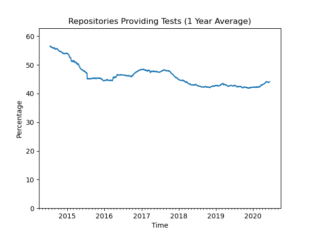
Figure 2.1: Repositories providing tests.
Just looking at the file names is not optimal. 6% of the repositories using a standard VHDL-based framework (VUnit, UVVM or OSVVM) do not use such a naming convention. However, it gives us a ballpark figure and a trend.
The second analysis (see Figure 2.2) looked at the repositories providing tests and calculated the percentage of them that are using at least one of the standard verification frameworks. This trend is increasing rapidly over the last few years.
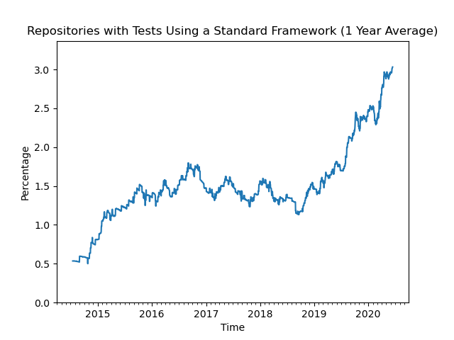
Figure 2.2: Repositories using standard frameworks.
Look at the vertical axis though. While the trend is impressive, the absolute numbers are not. Only 3% of the repositories with tests created last year use a standard verification framework.
This may come as a surprise. Many engineers working professionally with VHDL would probably say that verification is getting more and more important and that the majority is using a standard framework. Does this mean that GitHub data should be discarded as a relevent indicator for the professional world? There are at least three good reasons not to do so:
- Our beliefs are based on our experiences, and our experiences are often based on our interactions with a limited group of people. This group of people may not be a good representation of the whole VHDL community, for example due to regional differences.
- The tendency to only accept our own beliefs is called confirmation bias and is deeply rooted in the human nature. We need to be aware that it exists and try to look beyond it.
- Not all GitHub repositories are developed by professionals, but some are. We cannot expect GitHub to be a perfect reflection of the professional world but we can expect signs from that world.
In the following sections, we will dig deeper into the data to see what frameworks and combination of frameworks people are using. We will also compare those findings to the results presented in the Wilson Research Group functional verification study [4].
2.1.1 How-To
The results presented so far were compiled using the scripts presented in the following sections.
2.1.1.1 github_search.py
github_search.py is used to search GitHub for all repositories containing files of a specific language and matching a specified query. To find all repositories containing VHDL files one can specify end as the query since all VHDL files contain that key word. The result of the search is listed in text files stored in result_directory. A GitHub user name and a Github access token must also be provided to access the GitHub API.
python github_search.py \
vhdl end result_directory \
YourGitHubUser your_github_access_tokenThe GitHub API has a number of restriction on searches. One is that you cannot get the full result of the search if the result contains more than 1000 files. To handle that, every search is further restricted by the script to only target files in a limited size range. First files between 1 - n bytes are searched where n is the largest number resulting in less than 1000 files, then files in a range starting with n + 1 bytes are searched and so on until the maximum searchable file size of 384 kB has been included. The accumulated search result after every such increment is stored in a separate file in result_directory and only the last produced file contains the full result.
Occasionally there are more than 1000 found VHDL files of a single size, for example 264 bytes. In these cases some results are lost but most likely the repositories containing those missing files have other VHDL files caught in another search increment; so this will not have a significant effect on the overall statistics.
The GitHub API also has rate limitations, which means that searches with many results take a long time to complete. Searching for all VHDL files takes days but the more limited searches for specific verification frameworks that we will use later can complete in minutes. If you interrupt a longer search and restart it later github_search.py will look at the intermediate result files in result_directory and continue from where it was interrupted.
The result from the latest search for all VHDL files is found in all_vhdl_repos.txt
2.1.1.2 github_clone.py
github_clone.py makes a clone of all repositories listed in a file such as those produced by github_search.py (2.1.1.1). The clone is sparse and only contains VHDL, SystemVerilog and Python files, which are the ones used for this study. The sparse clone is also stripped from its .git directory, and zipped to save storage space. The script also stores some basic information about the repository.
A call to the script looks like this:
python github_clone.py \
repository_list result_directory \
YourGitHubUser your_github_access_tokenIf repository_list contains a repository foo/bar, the script will create a directory foo under result_directory and in that directory the zipped repository as bar.zip. The basic repository information is stored in a JSON file named bar.basic.1.json.
Cloning all VHDL repositories from GitHub takes several days and requires about 180 GB of storage. Due to that size, it has not been possible to share the data. Anyone interested in analyzing those repositories needs to recreate the data locally, using this script and the all_vhdl_repos.txt repository list.
2.1.1.3 analyze_test_strategy.py
analyze_test_strategy.py analyzes the cloned repositories and generates the statistics presented in this work. The initial search for repositories using any of the standard frameworks is automatic but also produces a number of false positives that must be removed manually:
- A repository with both VHDL and (System)Verilog files that is also using UVM or cocotb may not use these frameworks to verify the VHDL code. VUnit can also be used for (System)Verilog verification but the search script can distinguish and ignore such repositories to avoid false positives.
- Sometimes the main design being verified is based on (System)Verilog but it also includes third party IPs written in VHDL. This is considered a false positive since the IPs are not the target for the verification and the design language of choice is not VHDL.
- Some repositories have testbenches based on a standard framework but the purpose is not to verify VHDL code but rather to use the code for testing an EDA tool being developed. A parser for example.
- This study is focused on the users of the frameworks, not the developers. The repositories hosting the frameworks and copies of these repositories have been excluded.
The false positives are listed in fp_repos.json.
The script will produce a JSON file for each analyzed repository (repo_name.test.2.json) and also a summary JSON file. The name of that file is given in the call to the script
python analyze_test_strategy.py \
path/to/directory/with/cloned/repositories \
path/to/analysis_summary.json \
--fp fp_repos.json2.1.1.4 visualize_test_strategy.py
visualize_test_strategy.py creates the figures used in this post from the results generated by analyze_test_strategy.py (2.1.1.3). The figures are saved to the output directory given in the call.
python visualize_test_strategy.py \
path/to/analysis_summary.json \
path/to/github_facts/root/repo_classification.json \
path/to/output/directory2.2 Frameworks
In total, there are 281 repositories using a standard framework. Figure 2.3 shows the number of repositories using each framework, and how more than one are used in some of them. Note that using several frameworks in the same repository doesn’t necessarily mean that they are used for the same testbenches. This diagram doesn’t make that distinction.
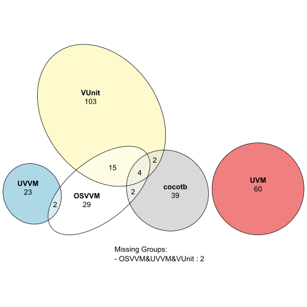
Figure 2.3: Number of repositories using one or several frameworks.
Note: Drawing area proportional Euler diagrams is hard and the R package we used (eulerr) didn’t quite make it. In these situations, the missing groups are listed below the diagram. In this case it failed to include two repositories using all three of VUnit, OSVVM, and UVVM.
From this diagram we can see how frequently the different frameworks are used, by just counting the number of repositories and to what extent they are used together. One of the more notable facts is that UVM isn’t the dominating framework, as concluded in the Wilson study [4] (from now on called WS). However, there are several important differences between WS and this GitHub study (from now on called GS). One is that WS has professional participants only, but the diagram above includes repositories developed by professionals as well as people from Academia.
To make GS more comparable with WS, all repositories need to be classified as being professional, academic or unknown (if failure to classify). This was done by looking at the contributors to each repository. To classify the contributors as professionals or from academia, GitHub user profiles and Git logs were looked, the usernames were searched through Google and searched on social platforms like LinkedIn. With that information, the following criteria was used:
- A repository with contributions from professionals is classified as a professional repository. Academic work is sometimes done together with the industry, which means that there is a professional interest for that work. That is the reason for not requiring all contributors to be professionals in order to classify the repository as professional. Also note that we’re not suggesting that professionals publish their professional work on GitHub. What we’re measuring is their practises. The assumption is that these public practises reflect what they do professionally. This assumption will also be tested statistically when we compare the results from WS and GS.
- A repository with no contributions from professionals, but with contributions from academia, is classified as an academic repository.
- If all contributions are made by users with unknown background, the repository is classified as unknown.
- A repository with contributors that are professionals today, but not at the time of their contributions, is not classified as professional.
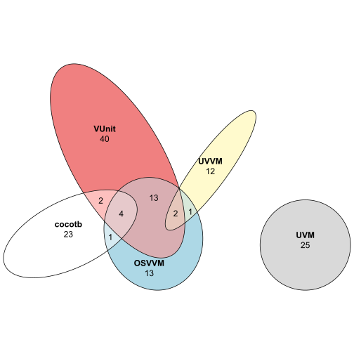
Figure 2.4: Number of professional repositories using one or several frameworks.
The distribution of professional repositories, which is shown in Figure 2.4, looks a bit different compared to the overall view in figure 2.3, but UVM is still not dominating. Another notable observation is how frameworks are used in combination:
- Most repositories using more than one framework use VUnit and OSVVM.
- More than half of the repositories using OSVVM also use VUnit.
- UVM is not combined with any other framework.
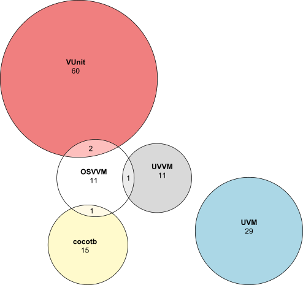
Figure 2.5: Number of academic repositories using one or several frameworks.
The academic view is shown in Figure 2.5. There is less mixing of frameworks in Academia, and this is what we would expect. With less experience, there is less time to try the different alternatives and find the successful combinations.
| UVVM | VUnit | cocotb | OSVVM | UVM |
|---|---|---|---|---|
| 0 | 3 | 1 | 5 | 6 |
For completeness, the number of unknown repositories should also be analyzed (see Table 2.1). The numbers are big enough to create an uncertainty about the precedence between cocotb, OSVVM, and UVM in previous diagrams; but they are not significant enough to change the bigger picture. VUnit is the most commonly used verification framework for VHDL repositories on GitHub.
While some insights were shown on how verification frameworks are used on GitHub, the unexplained differences between WS and GS remain. There are three more possible explanations that need to be investigated further:
- GS is focused on VHDL repositories, while WS includes both VHDL and (System)Verilog projects.
- WS was conducted in 2018 while the GitHub data originates from June 2020.
- In this section, the number of repositories was analyzed, and not the number of users. This is misleading because a single user can have several repositories and a single repository can have many contributors. WS presents percentages of design projects and would suffer from the same problem. However, we don’t think they have that data. Looking at the newly released 2020 survey (results are yet to be published) there are no questions that allow them to determine if two survey participants are working on the same project or not. Most likely they are counting users.
To get a deeper and more accurate understanding of the GitHub data, in following sections we will continue analyzing the Git history of these repositories and finding the number of users for each framework. The Git history will also reveal how the framework usage has changed over time.
2.2.1 How-To
The statistics and Euler diagrams presented in this section were produced by the previously mentioned analyze_test_strategy.py (2.1.1.3) and visualize_test_strategy.py (2.1.1.4) scripts. The classification of repositories is provided with repo_classification.json which is input to the visualize_test_strategy.py script.
2.3 Users
The user analysis is done by analyzing all commits to the files using a standard framework. Every commit author from the time the framework was introduced in the file and forward is logged as a user of that framework. Each user is classifed according to:
- A user that has committed to a professional repository is considered to be a professional user. Note that the user can be a student, but if there are professionals involved in the same project that student is considered to be working at a professional level.
- A user that is not at a professional level but has commits to an academic repository is classified as being an academic user.
- All other users are classified as unknown.
The list of users has also been checked for aliases. Two commit authors are consider to be the same user if:
- They have the same email address and that address isn’t a common default address such as
user@example.com. - The user names are very similar. This is a judgement call but that judgement was aided by using the Levenshtein distance as a metric for the similarity between strings. The result of that analysis can be found in
user_aliases.json.
Figure 2.6 shows the total number of users having experience with each framework. Looking at users rather than repositories (see Figure 2.3) doesn’t have a drastic effect to the overall picture. VUnit is still the most commonly used verification framework on GitHub.
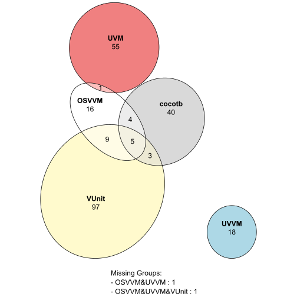
Figure 2.6: Number of users using one or several frameworks.
Using the timestamp for each user’s first commit allows to see how the situation depicted in Figure 2.6 evolved over time. This is shown1 in Figure 2.7 (download video from total_user_bar_race.mp4).

Figure 2.7: Number of users over time.
A further breakdown of the users based on classification is shown in Figures 2.8, 2.9 and 2.10.
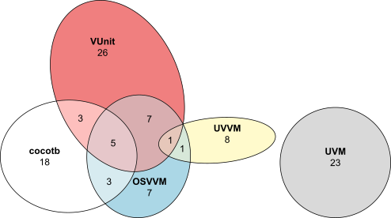
Figure 2.8: Number of professional users using one or several frameworks.
The same conslusions made for professional repositories still hold when analyzing professional users:
- Most professional users using more than one framework use VUnit and OSVVM.
- More than half of the professional users using OSVVM also use VUnit.
- UVM is not combined with any other framework.
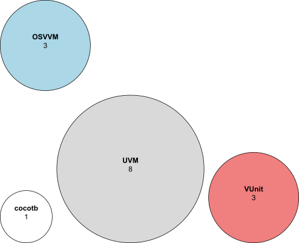
Figure 2.9: Number of unknown users using one or several frameworks.
The portion of unknown users is the same as the portion of unknown repositories (5%) and they do not affect the main conclusions.
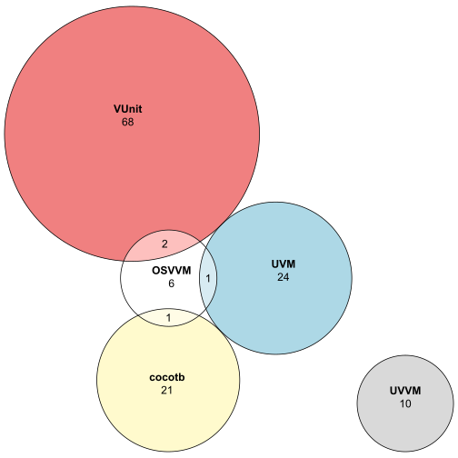
Figure 2.10: Number of academic users using one or several frameworks.
The academic view is a bit different from the corresponing view for repositories (see Figure 2.5) in that the relative portion of VUnit users is higher. There are more academic VUnit users than users of the other frameworks combined. More research is needed to fully explain the differences between professional and academic framework usage but some insight can be gained by comparing the professional and academic trends as shown in Figures 2.11 and 2.12.
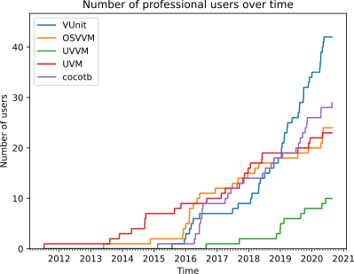
Figure 2.11: Number of professional users over time.
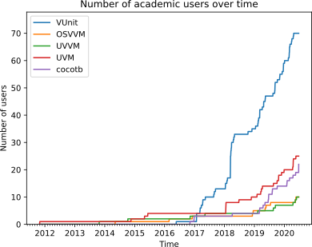
Figure 2.12: Number of academic users over time.
Overall the trends are stable or slowly changing with one notable exception. There is a drastic change in the number of academic VUnit users in early 2018. It’s always good to keep an eye on anomalies in the data. Are the numbers we see the result of a longer stable trend or caused by a special event? In the next section we will look deeper into this temporal anomaly and find its root cause. We will also look for spatial anomalies by examining the timezones from which the users operate. That will allow us to examine whether the trends we see are global or the results of local hotspots.
2.3.1 How-To
2.3.1.1 analyze_users.py
analyze_users.py makes a clone of all repositories using a standard framework, according to repository statistics (repos_stat.json) created by analyze_test_strategy.py. Unlike default github_clone.py use, git histories are preserved and repositories are not compressed. Furthermore, user statistics are extracted by scanning the Git history of all repositories, unlike the repository classification (repo_classification.json) and the list of user aliases (user_aliases.json).
The script produces a JSON file for each analyzed repository (repo_name.user.1.json) and also a summary JSON file. The name of the output file is given in the call.
python analyze_users.py \
path/to/directory/with/cloned/repositories \
path/to/repos_stat.json \
path/to/repo_classification.json \
path/to/user_aliases.json \
path/to/user_stat.jsonThe result of our latest run is provided in user_stat.json.
2.3.1.2 analyze_sample.py
The analysis of standard framework users also includes a comparison with the whole group of VHDL users on GitHub. This comparison is futher described in the next section. The VHDL users are collected from a random sample of VHDL repositories listed in sample_repos.txt. The sample repositories are first cloned using github_clone.py with the --no-zip option set to prevent repository compression. Next, the analyze_sample.py script is called to create a JSON file with the analysis result.
python analyze_sample.py \
path/to/directory/with/cloned/sample/repositories \
path/to/sample_user_stat.json2.3.1.3 visualize_users.py
visualize_users.py creates the images and the video clips used in this post from the results generated by analyze_users.py and analyze_sample.py. The images and videos are saved to the output directories given in the call.
python visualize_users.py \
path/to/user_stat.json \
path/to/sample_user_stat.json \
path/to/image_directory \
path/to/video_directory2.4 Anomalies
The explanation for the VUnit temporal anomaly seen in Figure 2.12 is to be found in the Elementos de Sistemas course offered by the Brazilian Insper Institution. The students of that course used VUnit for their work and also provided the results on GitHub.
The Brazilian connection to this anomaly raises a more general question: are the trends we see global trends or just strong local trends? Git can actually provide insights to that as well, since each Git commit also logs the timezone of the committer.
To set a reference, we start by analyzing how VHDL users are distributed around the globe. Figure 2.13 was created by analyzing all VHDL commits in a random subset of all the VHDL repositories on GitHub. This subset contains 2000 repositories and slightly more than 2500 users.
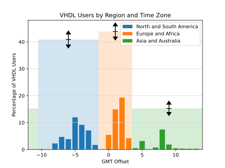
Figure 2.13: VHDL users by region and timezone.
With 27 timezones, the image is rather scattered. It is also a bit distorted, since locations using daylight saving time will occupy two timezones during a year, while those not using daylight savings time occupy one. To get a feel for the bigger picture, we have identified three larger regions: (North and South) America; Europe and Africa; and Asia and Australia. The vertical arrows at the top of the region bars represent the 95% confidence intervals for these numbers.
The european/african region has 44% of the users, which is sligtly more than the american region (41%). However, the confidence intervals of the two regions overlap, meaning that the order between the two regions isn’t statistically significant. On the other hand, the asian/australian region is, with 15% of the users, significantly smaller than two other regions. Note that this may not represent the real distribution of VHDL users in the world, since there can be regional differences in open source involvement. However, that potential bias is not important for this study. What’s important is that a framework with an even global adoption should have the given distribution among the regions. Figure 2.14 shows that this is not the case.
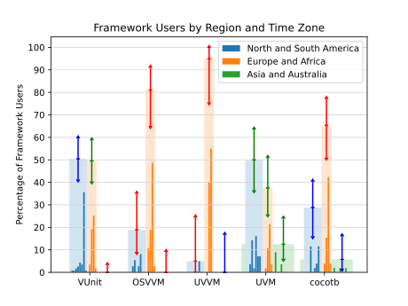
Figure 2.14: Framework users by region and timezone.
The numbers given in Figure 2.14 are the actual numbers on GitHub after a full scan for all standard framework users. From that point of view, the result is exact without any confidence interval. However, we’ve assumed that GitHub is representative for some larger group of users which results in the given confidence intervals. What that larger group of users is will be discussed later in this paper.
By comparing the confidence intervals in Figure 2.14 with those of the reference distribution in Figure 2.13 we can distinguish three different cases:
- The confidence interval for a region completely overlaps that of the reference distribution. This is marked with green arrows.
- The confidence interval for a region do not overlap that of the reference distribution. This is marked with red arrows.
- The confidence interval for a region partially overlaps that of the reference distribution. This is marked with blue arrows.
Based on this classification we can draw some conclusions:
- All confidence intervals for UVM are green. This means that the UVM distribution is consistent with an even global adoption of the framework.
- VUnit and OSVVM have no GitHub users in Asia/Australia and this under representation is significant. Note that also UVVM has no users in that region, but with fewer overall users the confidence intervals are larger and significant conclusions are harder to draw.
- As shown in Figure 2.13, America and Europe/Africa regions are similar in size. OSVVM and UVVM deviate from this with significantly more users in Europe/Africa while America is significantly under represented.
In the next section, we will derive confidence intervals for all results in this study, as well as the results from WS. This will allow us to conclude where the studies are consistent with each other and where they are significantly different.
References
[1] L. Asplund, O. Kraigher, and contributors, “VUnit: a unit testing framework for VHDL/SystemVerilog,” Sep. 2014. http://vunit.github.io/.
[2] Wilson Research Group, “Functional Verification Study,” Jan. 2015. https://blogs.mentor.com/verificationhorizons/blog/2015/01/21/prologue-the-2014-wilson-research-group-functional-verification-study/.
[3] Wilson Research Group, “Functional Verification Study,” Aug. 2016. https://blogs.mentor.com/verificationhorizons/blog/2016/08/08/prologue-the-2016-wilson-research-group-functional-verification-study/.
[4] Wilson Research Group, “Functional Verification Study,” Nov. 2018. https://blogs.mentor.com/verificationhorizons/blog/2018/11/14/prologue-the-2018-wilson-research-group-functional-verification-study/.
[5] C. Higgs, S. Hodgson, and contributors, “Coroutine Cosimulation TestBench (cocotb),” Jun. 2013. https://github.com/cocotb/cocotb.
[6] J. Lewis and contributors, “Open Source VHDL Verification Methodology (OSVVM),” May 2013. https://osvvm.org/.
[7] E. Tallaksen and contributors, “Universal VHDL Verification Methodology (UVVM),” Sep. 2013. https://uvvm.org/.
Animations/videos for each of the categories are available in the repo. See
video/*_user_bar_race.*.↩